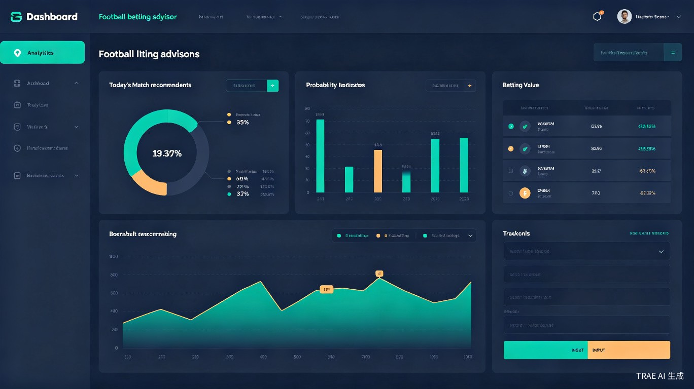

一、系统运行模式重新定义
根据你的需求，系统运行模式从"自动投注"调整为"人机协同顾问模式"：
系统负责（机器端）
- 数据采集与清洗
- 六模型并行预测
- 价值投注识别
- 凯利公式仓位计算
- 生成每日策略报告
- 赛后数据复盘分析
- 模型参数动态调整
你负责（人工端）
- 阅读系统策略报告
- 线下前往体彩店购买
- 记录实际购买信息
- 赛后输入比赛结果
- 确认/修正系统建议
- 执行资金管理纪律
- 保持理性心态
为什么这个模式更好：自动下单不仅技术复杂（需要对接体彩系统API，存在法律合规风险），更重要的是剥夺了人的判断权和责任感。人机协同模式下，你始终掌握最终决策权，系统只是提供专业建议，这更符合"顾问"的本质定位。
二、人机协同闭环流程
整个世界杯期间，你和系统之间形成一个持续迭代的反馈闭环。每场比赛都是一次学习机会，让系统越来越"懂你"。
flowchart LR
subgraph A["赛前阶段
(每日早上)"]
A1[系统抓取当日赛程] --> A2[六模型并行预测]
A2 --> A3[Stacking融合+校准]
A3 --> A4[狂热系数对冲]
A4 --> A5[价值投注识别]
A5 --> A6[生成策略报告]
end
subgraph B["人工决策
(赛前)"]
B1[阅读策略报告] --> B2[判断是否采纳]
B2 --> B3[线下购买体彩]
B3 --> B4[记录购买信息]
end
subgraph C["赛后阶段
(比赛结束)"]
C1[输入比赛结果] --> C2[输入实际盈亏]
C2 --> C3[系统复盘分析]
C3 --> C4[更新模型参数]
C4 --> C5[调整狂热系数权重]
end
A6 --> B1
B4 --> C1
C5 -.-> A1
style A fill:#1a2332,stroke:#00d4aa
style B fill:#1a2332,stroke:#f0c040
style C fill:#1a2332,stroke:#ff6b35
2.1 闭环的三个价值
1. 模型校准
赛后反馈的真实结果用于校准模型概率输出。如果系统持续高估某类比赛的胜率，反馈数据会暴露这一偏差，触发Platt缩放参数调整。
2. 狂热系数优化
通过对比"系统建议"与"你的实际采纳"以及"最终结果"，系统可以学习你的决策偏好，优化狂热系数的α/β/γ权重。
3. 资金管理迭代
实际盈亏数据用于评估凯利公式参数的合理性。如果波动过大，系统会建议降低Kelly比例；如果收益稳定，可适度提高。
三、系统输出：每日策略报告模板
系统每天生成的策略报告是你决策的唯一依据。报告必须清晰、结构化、可执行。
3.1 报告结构（每日自动生成）
【世界杯体彩策略报告 - 2026年X月X日】
━━━━━━━━━━━━━━━━━━━━━━━━━━━━━━━━━━━━ 一、当日赛程概览 ━━━━━━━━━━━━━━━━━━━━━━━━━━━━━━━━━━━━ 今日共 N 场比赛，经筛选后推荐关注 M 场 ━━━━━━━━━━━━━━━━━━━━━━━━━━━━━━━━━━━━ 二、推荐投注清单（按Value值降序） ━━━━━━━━━━━━━━━━━━━━━━━━━━━━━━━━━━━━ 【推荐 #1】巴西 vs 塞尔维亚 竞彩玩法：胜平负 推荐方向：巴西胜 竞彩赔率：1.85 模型概率：62%（六模型一致性：78%） Value值：+14.7% > 8%安全边际 建议仓位：资金池的 3.2%（1/4 Kelly） 置信度：高 关键依据：Elo分差180分 + 主场优势 + xG优势 风险提示：巴西近期伤病较多，需关注首发阵容 → 建议出手 【推荐 #2】日本 vs 西班牙 竞彩玩法：让球胜平负 推荐方向：日本+1球胜 竞彩赔率：2.35 模型概率：48%（六模型一致性：65%） Value值：+12.8% 建议仓位：资金池的 2.8% 置信度：中 关键依据：克莱门特经济模型显示日本青训体系优势 狂热系数：0.35（市场略看好西班牙，存在价值空间） → 建议出手 【观望 #3】阿根廷 vs 墨西哥 竞彩玩法：胜平负 推荐方向：阿根廷胜 竞彩赔率：1.45 模型概率：58% Value值：-15.9% < 8%安全边际 狂热系数：0.89（市场极度看好阿根廷，赔率被严重压低） → 不建议出手（赔率无价值） ━━━━━━━━━━━━━━━━━━━━━━━━━━━━━━━━━━━━ 三、资金管理状态 ━━━━━━━━━━━━━━━━━━━━━━━━━━━━━━━━━━━━ 当前资金池：10,000元 今日已用额度：0元（日上限：1,000元） 本周已用额度：2,500元（周上限：2,000元，已触发） ⚠️ 注意：本周已接近止损线，今日建议保守 ━━━━━━━━━━━━━━━━━━━━━━━━━━━━━━━━━━━━ 四、历史表现追踪 ━━━━━━━━━━━━━━━━━━━━━━━━━━━━━━━━━━━━ 总投注场次：8场 命中场次：5场（胜率62.5%） 总盈亏：+680元（ROI +6.8%） 最大单笔盈利：+420元 最大单笔亏损：-200元 ━━━━━━━━━━━━━━━━━━━━━━━━━━━━━━━━━━━━ 五、明日预告 ━━━━━━━━━━━━━━━━━━━━━━━━━━━━━━━━━━━━ 明日重点场次：法国vs丹麦、德国vs日本 初步判断：法国场次可能存在价值投注机会
3.2 报告生成时间
- 每日早上 8:00：系统自动生成当日策略报告（基于最新赔率数据）
- 赛前 2小时：系统推送更新报告（包含首发阵容、伤病等临场信息）
- 紧急变动时：如重大伤病新闻，系统即时推送修正建议
四、用户输入：赛后反馈标准格式
赛后反馈是闭环的关键。你需要在比赛结束后，将以下信息输入系统：
4.1 必填反馈项
| 字段 | 说明 | 示例 |
|---|---|---|
| 比赛ID | 系统自动生成 | WC2026-G12 |
| 是否采纳建议 | 是 / 否 / 部分采纳 | 是 |
| 实际购买玩法 | 胜平负/让球/比分等 | 胜平负 |
| 实际购买方向 | 与建议一致或自行调整 | 巴西胜（与建议一致） |
| 实际赔率 | 体彩店实际给出的赔率 | 1.82 |
| 投注金额 | 实际花费金额 | 320元 |
| 比赛结果 | 实际赛果 | 巴西 2:0 塞尔维亚 |
| 实际盈亏 | +盈利金额 或 -亏损金额 | +262元 |
| 未采纳原因 | 如未采纳，简述原因 | 赔率低于预期，选择观望 |
4.2 反馈输入界面（简化版）
赛后反馈录入
比赛：巴西 vs 塞尔维亚 ┌─────────────────────────────────────┐ │ 是否按建议购买？ [是] [否] │ │ │ │ 实际购买方向：巴西胜 │ │ 实际赔率：1.82 │ │ 投注金额：320元 │ │ │ │ 比赛结果：巴西 2:0 塞尔维亚 │ │ 实际盈亏：+262元 │ │ │ │ [提交反馈] │ └─────────────────────────────────────┘
反馈的重要性：即使你没有采纳系统建议，也请务必反馈"未采纳"及原因。这让系统知道"这次建议为什么没有价值"，从而优化未来的价值识别算法。
五、反馈数据如何驱动系统进化
你的每一次反馈都在训练系统变得更聪明。以下是反馈数据的具体用途：
5.1 模型校准（概率修正）
校准逻辑示例
系统预测巴西胜率62%，实际结果：巴西赢了。
→ 这是1次"预测正确"记录，用于验证模型校准度。
如果连续10场中，系统预测胜率60%+的比赛实际只赢了5场（50%），说明模型系统性高估，Platt缩放参数需要向下调整。
5.2 狂热系数权重优化
优化逻辑示例
比赛A：狂热系数0.85（市场极度看好阿根廷），系统建议"不建议出手"。你未采纳，自行购买了阿根廷胜，结果阿根廷赢了。
→ 这说明狂热系数的阈值可能设得太保守，α权重需要下调。
比赛B：狂热系数0.30（市场冷淡），系统建议"出手"。你采纳了，结果输了。
→ 这说明低狂热系数场景下模型可能过于乐观，需要增加谨慎因子。
5.3 凯利公式参数调整
| 实际表现 | 系统响应 | 调整动作 |
|---|---|---|
| 连续3周盈利，ROI > 10% | 表现优异 | Kelly比例从1/4提升至1/3 |
| 连续2周亏损，ROI < -5% | 表现不佳 | Kelly比例从1/4降至1/8 |
| 资金回撤超过20% | 触发风控 | 强制降至1/16 Kelly，直至回本 |
| 波动率过高（夏普 < 0.5） | 风险过大 | 降低单场上限至3% |
5.4 模型权重动态调整
Stacking融合中各子模型的权重不是固定的。系统根据近期表现动态调整：
- 如果MLP神经网络近期连续预测正确，其权重自动提升
- 如果克莱门特经济模型在小组赛阶段表现不佳（宏观变量对单场预测力弱），其权重临时降低
- 淘汰赛阶段，Elo评级和LSTM的权重自动提升（实力差距更明显、时序状态更重要）
六、MVP最小可行方案
如果你不想开发完整的系统，以下MVP方案只需要Excel/脚本即可运行：
6.1 MVP所需工具
数据源（全部免费）
- Football-data.co.uk（历史赛果）
- Transfermarkt（球员/球队信息）
- 中国体彩官网（竞彩赔率）
- 世界银行（GDP/人口）
工具（零成本）
- Excel/Google Sheets（数据记录）
- Python脚本（泊松+Elo计算）
- 微信/备忘录（赛后反馈记录）
6.2 MVP每日操作流程
Step 1：早上手动获取数据
打开中国体彩官网，记录当日所有比赛的竞彩赔率
Step 2：运行Python脚本
输入对阵双方，脚本输出泊松概率 + Elo预期胜率
Step 3：Excel计算Value值
Value = 模型概率 × 赔率 - 1，筛选出Value > 8%的比赛
Step 4：人工判断
结合自己的足球知识，判断是否采纳（如重大伤病新闻）
Step 5：线下购买
前往体彩店，按计算好的仓位购买
Step 6：赛后记录
在Excel中记录结果、盈亏、是否采纳、未采纳原因
Step 7：周末复盘
每周日回顾一周表现，调整下周的Kelly比例
6.3 MVP的局限性
MVP方案缺少以下能力：
- 无法实时追踪赔率变动（可能错过最佳出手时机）
- 缺少狂热系数对冲（容易受市场情绪影响）
- 手动计算繁琐（每天需要30-60分钟）
- 无法进行蒙特卡洛模拟（缺少晋级路径预测）
- 反馈数据无法自动驱动模型进化
建议：MVP适合世界杯前1-2个月的测试期，用于验证策略有效性。世界杯期间建议升级至半自动化系统。
七、世界杯期间每日运行SOP
以下是世界杯期间（约30天）的标准操作流程（SOP），确保你和系统高效协作。
7.1 每日时间线
| 时间 | 动作 | 负责方 | 耗时 |
|---|---|---|---|
| 08:00 | 系统生成当日策略报告 | 系统自动 | - |
| 08:30 | 阅读策略报告，标记感兴趣的场次 | 你 | 10分钟 |
| 09:00-17:00 | 关注新闻动态（伤病、阵容） | 你 | 碎片化 |
| 赛前2小时 | 系统推送更新报告（含临场信息） | 系统自动 | - |
| 赛前1小时 | 最终决策：确定购买清单 | 你 | 5分钟 |
| 赛前 | 线下前往体彩店购买 | 你 | 30分钟 |
| 赛后30分钟内 | 输入比赛结果和实际盈亏 | 你 | 5分钟/场 |
| 23:00 | 系统生成当日复盘摘要 | 系统自动 | - |
7.2 小组赛 vs 淘汰赛的不同策略
小组赛阶段（前2周）
- 重点关注小组赛末轮（第3轮），出线形势导致赔率扭曲
- 克莱门特经济模型权重较高（宏观变量对小组赛更有效）
- 出手频率较低（约10%-15%场次）
- 优先选择让球胜平负（实力差距大的比赛多）
淘汰赛阶段（后2周）
- Elo评级和LSTM权重提升（单场定胜负，实力差距更明显）
- 狂热系数作用增强（市场情绪极端化）
- 可适当提高出手频率（约20%场次）
- 关注冷门逆袭机会（淘汰赛爆冷概率高于小组赛）
7.3 特殊情况处理
| 场景 | 系统建议 | 你的行动 |
|---|---|---|
| 系统建议出手，但你感觉不稳 | 标注"低置信度" | 可选择观望或降低仓位至1/8 Kelly |
| 系统不建议出手，但你有强烈预感 | 尊重系统判断 | 建议遵循系统，最多小额试水（<1%资金池） |
| 触发日止损线 | 推送风控警报 | 当日停止一切投注，休息 |
| 比赛延期/取消 | 自动退回投注金额 | 记录事件，不影响资金管理 |
| 系统数据异常 | 标记"数据缺失" | 该场比赛不投注，等待数据恢复 |
八、数据记录与复盘机制
8.1 必须记录的数据字段
以下数据需要在整个世界杯期间持续记录，用于赛后复盘和系统优化：
| 类别 | 字段 | 用途 |
|---|---|---|
| 投注记录 | 日期、场次、对阵双方 | 基础标识 |
| 竞彩玩法、推荐方向、实际方向 | 策略一致性 | |
| 模型概率、竞彩赔率、Value值 | 价值识别效果 | |
| 建议仓位、实际投注金额 | 资金管理执行 | |
| 比赛结果、实际盈亏 | ROI计算 | |
| 是否采纳建议、未采纳原因 | 决策偏好分析 | |
| 资金追踪 | 每日资金池余额 | 回撤监控 |
| 日盈亏、周盈亏、累计盈亏 | ROI追踪 | |
| 日投注额、周投注额 | 仓位监控 | |
| Kelly比例调整记录 | 策略迭代 | |
| 模型表现 | 六模型各自的预测准确率 | 模型权重调整 |
| 狂热系数与实际结果的关联 | 系数优化 | |
| Value值区间与胜率的关系 | 阈值优化 |
8.2 复盘周期
每日复盘（5分钟）
检查当日盈亏、是否触发止损线、记录赛后反馈。系统自动生成当日摘要。
每周复盘（30分钟）
回顾本周ROI、模型表现、资金管理执行情况。调整下周Kelly比例和出手策略。
阶段复盘（小组赛结束/淘汰赛结束）
深度分析各模型在不同阶段的表现差异，调整模型权重和狂热系数参数。
世界杯结束复盘（2小时）
完整回顾整个周期的表现，生成最终报告，提炼经验教训，为下一届世界杯做准备。
8.3 复盘报告模板
【周复盘报告模板】
━━━━━━━━━━━━━━━━━━━━━━━━━━━━━━━━━━━━ 第 X 周复盘（日期范围） ━━━━━━━━━━━━━━━━━━━━━━━━━━━━━━━━━━━━ 一、资金表现 起始资金：____元 结束资金：____元 周盈亏：____元（ROI：____%） 最大回撤：____% Kelly比例：____（上周：____） 二、投注统计 总出手场次：____场 命中场次：____场（胜率：____%） 平均Value值：____% 平均赔率：____ 三、模型表现 泊松回归准确率：____% MLP准确率：____% XGBoost准确率：____% Elo准确率：____% 克莱门特准确率：____% LSTM准确率：____% Stacking融合准确率：____% 四、关键发现 [记录本周的重要洞察，如"小组赛末轮Value值普遍偏高"] 五、下周调整 [记录下周需要调整的参数和策略] ━━━━━━━━━━━━━━━━━━━━━━━━━━━━━━━━━━━━
数据就是资产：整个世界杯期间产生的投注记录、反馈数据、复盘报告，是你最宝贵的资产。这些数据不仅用于本届世界杯的实时优化，更是下一届世界杯（2030年）的"训练数据"。保存好这些数据，下一届你的系统起点会高得多。